Exeter City Council’s “Liveable Exeter” vision identifies the redevelopment of the North Gate area of the city centre as one of eight strategic projects intended to “meet people’s needs for homes, jobs and services in the 21st century”. The “transformational housing delivery programme”, which is focused on “priority sites in public ownership”, aims to deliver 308 new homes on the sites of the Harlequins and Guildhall shopping centres.
Curlew Alternatives, a developer which has previously specialised in purpose built student accommodation, said the redevelopment of the Harlequins site, which is owned by Exeter City Council, offers a “once in a generation opportunity to turn a failed shopping centre into a vibrant mixed-use development that brings inward investment into the city”.
The redevelopment scheme presented to Exeter City Council in 2017 by the shopping centre’s former owners proposed student accommodation across the whole site, but pre-planning discussions and public consultation which began in June last year eventually produced revised proposals for a five storey 116-bed hotel and a seven storey block containing 251 “co-living” bedspaces, of which 99 are in studios and 152 in “cluster flats”.
Co-living development is an emerging global real estate investment vehicle which is virtually indistinguishable from purpose built student accommodation. Building designs typically do not meet minimum space or amenity standards and tenancies are typically short-term and at rents double those charged in traditional private sector rented accommodation.
Opposition to the scheme has been widespread, with local and national conservation charities and hundreds of residents objecting on a wide range of grounds including harm to Exeter’s historic environment as well as the substandard design of the co-living block and the likelihood that, despite the developer’s claims, it will largely, if not entirely, be occupied by students. The redevelopment also poses significant risks to the section of Exeter city wall beside the site.
More than 4000 people signed a petition opposing the development. One local resident called the design “a hideous, vile, ugly, totally monstrous, grossly oversized collection of blocks”, while another said the development was “an inappropriate hijack of a significant city centre location”. The Victorian Society said it would cause “significant harm” which had not been justified as required in the National Planning Policy Framework and could not be offset by the claimed public benefits of the proposal.
According to the developer these include benefits to Exeter’s economy derived from the construction and subsequent operation of the hotel and co-living block, including spending associated with visitors and residents. However these were significantly overstated in the report to the planning committee which decided the application.
The developer also claimed the co-living block would help the council meet its housing supply targets, but the government’s housing delivery test excludes such accommodation from its calculations.
The council allowed the developer to fall short on its affordable housing provision requirements despite the city’s housing affordability crisis, and accepted the developer’s claims about minor public realm improvements at face value. Having said it would define its policy position on co-living before the redevelopment plans were submitted, as other cities have done, it instead decided to postpone the issue.
Exeter City Council’s planning committee, which is dominated by ruling Labour group Executive members, subsequently approved the plans, subject to a legal agreement which has yet to be completed and other conditions being met. Exeter City Council leader Phil Bialyk said: “I really do think that this is a move in the right direction”.
However it has since emerged that the Secretary of State for Housing, Communities & Local Government, who overturned approval for a similar co-living block in the centre of Norwich earlier this month, may intervene to call in and potentially overrule the city council’s decision.
In this special report we examine the key issues involved in the decision and the basis on which it was made, and raise the prospect of more development decisions being taken this way by Exeter City Council under its “Liveable Exeter” banner.
Harlequins co-living and hotel block elevations. Source: LHC Design.
Overcrowding has been a feature of British urban life for centuries, often involving cramped conditions with few facilities for those who cannot afford better, from Edinburgh’s fifteen storey tenements to the rookeries of Dicken’s London. Many of the progressive social housing reforms of the interwar years were focussed on addressing the issue.
A briefing note submitted as part of the Harlequins application by JLL, the developer’s agent, nevertheless described what it called “micro-living” as “a growing trend”. It also claimed that “micro-living” includes “the more traditional model of micro housing […] known generally as Houses of Multiple Occupancy (HMOs)” despite these being first defined in 2004 UK legislation which introduced licensing intended to tackle overcrowding, poor property management and impose minimum standards on a sector which often houses vulnerable tenants.
There were an estimated 497,000 HMOs in England and Wales at the end of March 2018. Official estimates of the number of co-living units are not available, but only a few such developments have so far gained planning permission in the UK.
JLL said the micro-living “trend” is the result of “growing affordability issues” and described co-living as an HMO “hybrid” in which units provide “all of a person’s basic housing needs” but which are “smaller in size”. Underlining the financial factors that drive the frequently tiny bedspaces provided in co-living developments, James Kingdom, an associate director at the firm, said: “Where land values are higher or pressures on land use are greatest, then there is an obvious need to increase the number of people that can live in these locations.”
He also said that communal areas, such as dining or living rooms “provide the trade-off for a smaller living space” and, surprisingly, that these “are features that are unlikely to be present in a house share or self-contained flat.”
Other differences with ordinary rented accommodation are that bedspaces are fully-furnished and optionally serviced at extra cost. Philip Hillman of JLL said: “The student accommodation sector has been transformed by a new generation of students who have grown accustomed to higher levels of serviced accommodation than has previously been available.
“After graduation, they are pursuing similar high-quality accommodation that provides them with flexibility and consistency, regardless of location. Co-living seeks to fill a gap in the traditional residential market by providing a bespoke no strings attached purpose built managed offering.”
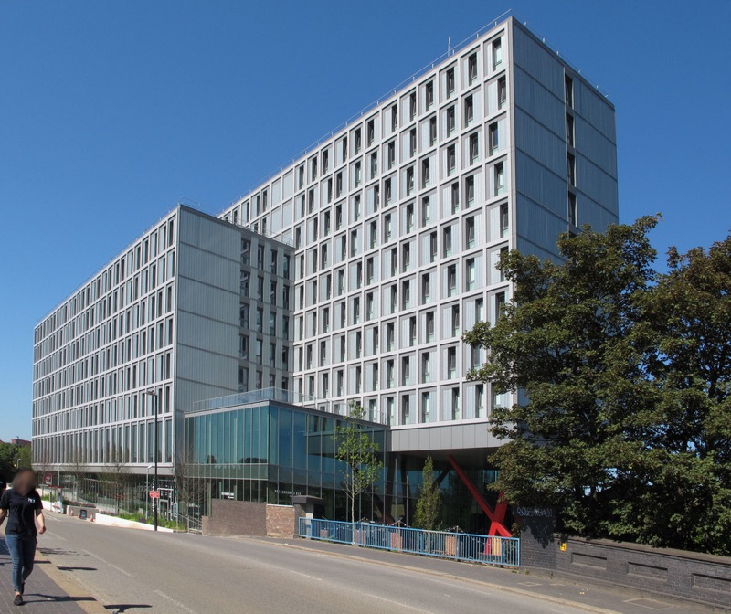 Old Oak co-living development in London. Photo © David Hawgood under CC BY-SA 2.0.
Proponents of co-living emphasise that it offers greater amenity than traditional rented accommodation, promoting it as “housing as a service” which offers all-inclusive perks to its occupants. JLL cites a 550-bed nine storey development near Willesden Junction in London as an example. Old Oak which, like the proposed Harlequins block, was also originally intended to be student accommodation, offers a gym, spa, restaurant and bar and includes twice-weekly room cleaning and bed linen changes in the rent.
It was the UK’s first large scale co-living development, opening in 2016. Its marketing materials invite you to join a “thriving community” in which you can “find friendly faces, stimulating shared spaces and a boundary pushing events programme, all right inside your home”.
It was developed by a company called The Collective which has since also opened a “haven of community and creativity” in a 21-storey 705-bed block at Canary Wharf and a 125-bed hotel in New York which is “packed with unique communal spaces designed to connect, learn and unwind”. The company has three developments in the pipeline, also in New York, which will add another 1215 units to its portfolio. It says its “mission is to build and activate spaces that foster human connection and enable people to lead more fulfilling lives”.
However in a market forecast to be worth $550 billion over the next ten years in the US and Europe alone, co-living’s potential “to produce a greater return on investment” than standard private rented sector development may be what is really motivating massive investment in the sector.
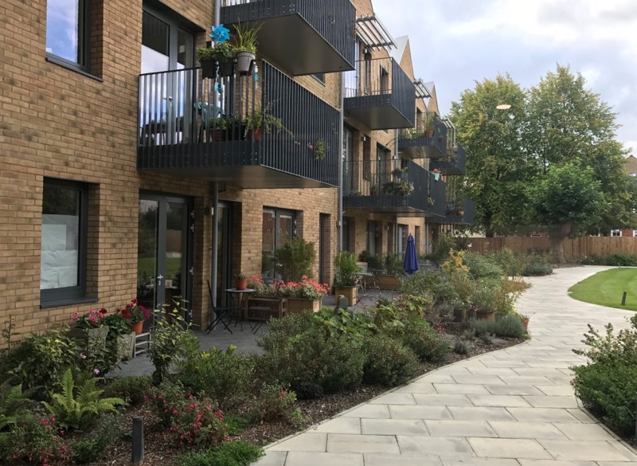 Older Women’s Cohousing development in London. Photo © Lucy Bridgers.
Claiming to supply community as part of the package is a key pitch for most co-living companies. Matthew Stewart of the University of Westminster says that the most alarming feature of developments such as Old Oak “isn’t the banality of its architecture, the vague claims of solving a housing shortage or the pessimistic idea of a narcissistic youth driven through the next networking opportunity”, it’s that “this ‘new way of living’ is in fact a commodified old way of living, one that is steeped in the language of modernism yet robbed of its radical social intent”.
Maria Brenton is a founder member of Older Women’s Co-Housing, a group of women over fifty who share an award-winning purpose-built development of 25 flats in London which the group created in partnership with a housing association. She says developer-led co-living projects that use the same language of community and inclusion as the co-housing movement are misleading because their residents don’t have any say in how the place is run.
Other critics say co-living developments are symptomatic of cities failing young people, in which “the radical promise of co-housing has been co-opted” to promote “a private sector fix that merely scrapes the surface of a problem that the market first created”. Hannah Wheatley of the New Economics Foundation said, “co-housing in its purest form is about communities being in control of their housing” while “co-living is purely a new way for developers to squeeze profit from an already broken housing market”.
Old Oak residents have first-hand experience that community isn’t a commodity that can be manufactured. They face fines of up to £250 for breaking house rules such a keeping communal spaces tidy and point to pervasive surveillance cameras as evidence that the claimed sense of community is missing.
One said that the building is “not much more than a glorified student dorm”.
Is co-living student accommodation by the back door?
Like Old Oak, the scheme to redevelop the Harlequins shopping centre originally proposed the construction of purpose built student accommodation across the whole site. It then became a mixture of hotel and student accommodation in pre-planning discussions.
Then, in the months leading up to the formal submission of plans, Exeter City Council leader Phil Bialyk began promoting the idea that the development could be used as student accommodation and co-living combined.
In August 2019 he said he had discussed the city’s “policy on purpose built student accommodation” with councillors, officers and developers, and had received “commitments from some for co-living, which means that purpose built accommodation would be open to anybody and everybody”.
In September 2019 he said: “We want new purpose-built student accommodation to have space for anyone to rent. This is the way we will achieve balanced and sustainable communities. Co-living will help future-proof expansion in this [higher education] sector, and I have been very encouraged with discussions I have had with developers and the university about our future planning policy in this area.”
Then in October 2019 he said: “Co-living will allow key workers and anyone else to live alongside students” and “We’ve had some good discussions with developers about co-living. This will see new purpose–built student accommodation being made available to everyone”.
Exeter City Council leader Phil Bialyk. Photo: Exeter City Council.
However, by the time the developer submitted its plans in November 2019, the scheme had become a mixture of hotel and co-living, which it said had replaced the previously proposed student accommodation. The developer was keen to ensure that there was no misunderstanding: a Devon Live report about the plans was “amended after Curlew explained its co-living scheme does not refer to students and key workers and young professionals co-living side by side”.
Students will nevertheless be free to live there, and are expected to live there: occupation is open to everyone over eighteen years of age. Devon & Cornwall Police expressed concern about safeguarding and “the potential for disruption” with student and non-students living alongside each other in its response to the planning application, and councillors repeatedly referred to students living in the block at the October planning committee meeting which approved the application.
Diana Moore, Green Party councillor for St David’s ward, which includes the Harlequins site, described the co-living plans as “warehousing for people”, adding that they “appear to follow the same floor plans as the pre-application consultation showing student housing”. Keith Lewis of Exeter Civic Society also said: “The co-living accommodation appears to be exactly the same as that presented at consultation earlier in 2019 for student accommodation”.
Liberal Democrat councillor Michael Mitchell, who is a member of the council’s planning committee, said that the proposed twelve week co-living leases “mirror university terms” and that the block “appears to be, in all but name, more student accommodation”.
JLL director Chris Dadds nevertheless said: “the accommodation is for co-living, so it’s not a student scheme”. When pressed on how he would distinguish the plans for the Harlequins co-living block from those that would have been submitted had it instead been intended as student accommodation, he said it “wouldn’t have the same level of shared amenity on the lower floors or on each floor. The cluster flats would have looked similar but they wouldn’t then have shared wider accommodation within the building.”
Comments made by another JLL director, Richard Lustigman, in a briefing note earlier this year may have been more revealing: “When it comes to defining coliving […] the term does surprisingly little to help us distinguish what it actually is. But could that ambiguity be its greatest strength? The sheer inability to be packaged and compartmentalised into an easily digestible definition is one of coliving’s greatest strengths.”
Whether or not the Harlequins redevelopment plans would mean more mass city centre student accommodation (and a hotel) and however valuable the slipperiness of co-living as a concept from the developer’s perspective, there is a more fundamental issue that must be addressed in considering any application for planning permission on this site.
Exeter City Council’s inability to demonstrate a five year supply of deliverable housing sites means that a presumption in favour of development applies to most planning applications for residential accommodation in the city. Such applications do not pass automatically, but are generally granted.
However, in this case, the Harlequins shopping centre’s location in a conservation area, where it is surrounded by a wide range of important heritage assets, means that the proposals have to pass a “non-weighted balance test” before the presumption in favour of development would even be considered. The city council planning officer made this clear in his report to the planning committee.
He went on to explain that if, and only if, “there is no significant adverse impact when considering policies for the protection of heritage against other policies” the absence of a five year land supply would mean a presumption in favour of sustainable development would apply.
Harm to heritage assets
The city planning officer cited several key paragraphs in his report which specify how to consider potential impacts on heritage assets, including section sixteen of the National Planning Policy Framework (NPPF) which addresses conservation and enhancement of the historic environment.
Interpretation of NPPF is also directed by Planning Practice Guidance and further guided by relevant case law. Other national policies are also relevant in this case, such as Department for Transport cycle infrastructure design guidance, as are various Exeter Local Plan policies.
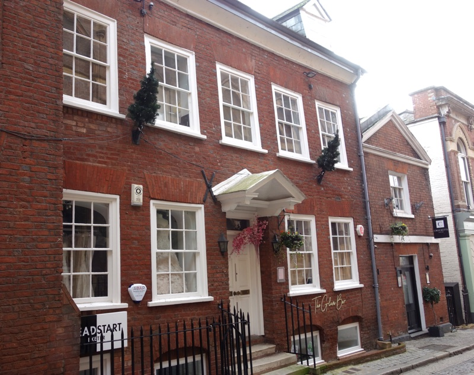 Historic buildings on Upper Paul Street facing RAMM
There are a great many heritage assets in the vicinity of the Harlequins shopping centre site. These include Rougemont Castle and the Roman, Anglo-Saxon and mediaeval city walls, which are scheduled monuments, the grade I listed Cathedral Church of St Peter and Church of St Michael and All Saints, and the grade II* listed Civic Hall Higher Market, St Bartholomew’s cemetery, War Memorial and No.1 Upper Paul Street.
There are numerous grade II listed buildings nearby, notably including the Royal Albert Memorial Museum (RAMM), Iron Bridge and the City Gate Hotel. Northernhay and Rougemont Gardens are also grade II listed.
In addition more than fifty nearby houses, shops and other buildings on Queen Street, Upper Paul Street, Gandy Street, Northernhay Street and Northernhay Square, Waterbeer Street, Lower North Street and St David’s Hill are grade II listed, as are parts of St Bartholomew’s churchyard and cemetery and the gate piers of the former marbleworks on Northernhay Street.
Other nearby buildings are locally listed, including The Rougemont Hotel, Elim Providence Chapel and several more houses on Northernhay Street, which one resident described as “one of the few remaining streets in the historic core of Exeter with family houses which are still being used as such”. The site is inside Exeter’s Central Conservation Area and borders the St David’s Conservation Area.
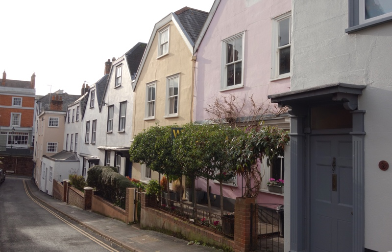 Historic buildings on Northernhay Street looking towards City Gate Hotel
Historic England is a public body which must be consulted by law where development applications concern the historic environment. It said its response to the Harlequins application was principally concerned with the scheduled monuments, Grade I and Grade II* listed heritage assets and the conservation areas, and that the council should seek its own specialist advice on other heritage assets including those that are Grade II and locally listed.
It nevertheless urged the council to follow the approach laid out in its Setting of Heritage Assets guidance by assessing the significance of historic buildings and open spaces in their contexts because “the scale and mass of the proposed development” had “potential impacts” which it considered to be “varied and wide reaching”.
This recommendation was a response to what it called the “tabular and atomised” heritage impact assessment approach adopted by the Harlequins scheme developer. It said “this approach fails to properly engage with the nature of the asset’s significance and their relationships with each other, or the surrounding topographic landscape”, adding “the use of matrices tends to confuse the concepts of significance, sensitivity and magnitude of impact whilst atomising complex relationships between features and apparent impacts.
“Consequently we have concerns about its use in cases with multiple assets with complex relationships, such as in the case of this application.” Historic England also said: “Due to the number of assets affected the cumulative impact needs to be considered, which will be greater than the independent elements”.
However Exeter City Council’s heritage officer ignored these recommendations in his report, instead relying on the heritage impact assessment approach adopted by the developer. He said he did so “in order that the applicant’s assessments can be directly compared using the same scale”.
This approach meant that his report, on which the planning officer’s recommendation to approve the development relied, individually graded the harm to each of the many heritage assets in the vicinity of the Harlequins redevelopment site, as well as both conservation areas, on a seven point scale from neutral to substantial without considering their relationships with each other.
Several designated heritage assets which are affected by the proposals were also ignored, according to The Georgian Group, a registered heritage conservation charity which also objected to the plans.
In adopting this approach the heritage officer failed to follow a 2019 High Court ruling concerning the assessment of levels of harm in applying heritage policies, in which the court held that there are only three gradations of harm in heritage terms: substantial, less than substantial and no harm.
The court also held that even limited or negligible harm was enough to fall within the “less than substantial” harm category. The judge said: “The fact that the harm may be limited or negligible will plainly go to the weight to be given to it as recognised in Paragraph 193 NPPF. However, in my judgment, minimal harm must fall to be considered within the category of less than substantial harm.”
The heritage officer’s report acknowledged that “the proposed development will have an impact upon the setting of the designated and non-designated assets” and “will generate some harm to heritage assets” but did not explicitly weigh individual assets according to their importance, or clearly and convincingly justify the harm it did acknowledge would occur.
It did not adopt a contextual approach to the “multiple assets with complex relationships” that are affected by the redevelopment proposals, nor did it attempt to analyse the cumulative impact of the harm to individual heritage assets it did include.
Historic buildings on Lower North Street overlooking Iron Bridge
The heritage officer’s report also said that “any such harm must be acknowledged and measured against the value of the asset and any benefits the proposal will bring under wider policy requirements”, relying on NPPF Paragraph 196, which says: “Where a development proposal will lead to less than substantial harm to the significance of a designated heritage asset, this harm should be weighed against the public benefits of the proposal including, where appropriate, securing its optimum viable use.”
The positive heritage effects identified in the report include archeological investigation during demolition and construction works, the creation of improved public realm around the new buildings and the construction of an “interpretation centre” intended to “enhance public engagement” with the city wall.
Exeter city wall
During the planning consultation process Devon archaeologist Stuart Blaycock, author of a major study of Exeter’s historic city wall, focused attention on the condition of the 160 metre section beside the development site. He said Historic England had listed the city wall on its register of monuments at risk in 2018 after “increasing neglect” which had followed the cessation of regular maintenance inspections in 2010.
He said the justice of this move was “amply demonstrated” by the sudden collapse of a section of wall backing onto the yard of the City Gate Hotel in January 2019, and described the proposals to maintain a gap of no more than 50 centimetres between the Harlequins redevelopment works and the line of the city wall as “unbelievable”.
Historic England said “early consideration will need to be given to the potential impact of vibration on the wall through the construction phase” because “the monument is fragile”. Subsequent reports into the condition of the wall commissioned by the developers, which included a conservation appraisal, an environmental and conservation impact assessment and an overview of its structural condition all found “significant issues that continue to contribute to its deterioration” and which require attention.
All the reports emphasised their limited, preliminary scope, particularly since the surveys on which each was based were limited to examining a 40 metre section on the north side of the wall which happens to be accessible via the Northernhay Street car park. The remaining 120 metres on that side are in private gardens.
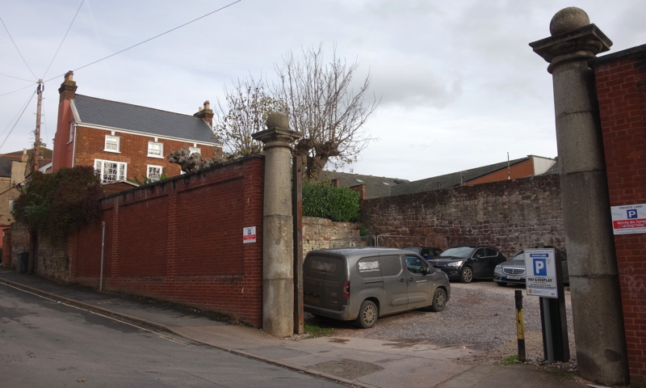 Exeter city wall through Northernhay Street car park marbleworks gate pillars
One report said a “much more detailed schedule and specification would have to be drawn up” in order for required remedial conservation works to take place. Another said its “examination was limited” to areas which were accessible, but nevertheless concluded that water exposure was “likely to have an ongoing deleterious effect”.
Comprehensive repointing and repair of sections of the wall, the replacement of defective capping and installation of new soft capping and improvements to surface and below ground water drainage to direct water away from the wall were all recommended.
The third report said the situation on the north side in the car park section “is not good, with localised collapses being a real possibility, with little warning”, identifying potential instability and bowing masonry “which could fail at any time in the near future” the causes of which “can only be identified by further accurate survey work and detailed investigations into the wall make up, possibly using borescopes combined with ground penetrating radar techniques”.
A combined summary report noted that Exeter City Council had already erected fencing to block off parking spaces where collapse looked likely, as well as closing the Maddocks Row arch.
The structural surveyors recommended a “full assessment of the wall’s stability over its full length” before any construction work begins on site, adding “vibrations from demolition works, and the new construction work itself, with major groundworks and piling could cause - or be said to cause - damage to the wall, notably in the areas which are already of concern”.
They recommended protective measures including the erection of temporary shoring, the installation of a vibration monitoring system to prevent the impact of works exceeding agreed limits, a demolition method which avoids heavy loads impacting with the ground and a non-driven piling system for subsequent construction. They also recommended an exclusion zone on the redevelopment site to prevent heavy plant or machinery movement and materials being stockpiled too close to the wall.
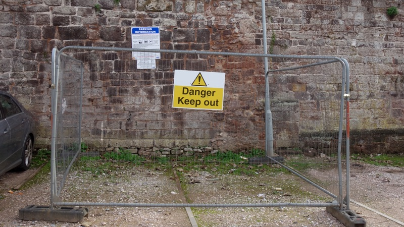 Heras fencing in front of an unsafe section of Exeter city wall in Northernhay Street car park
A city council officer responded to the structural survey by also recommending that the north-facing sections of the wall that had not been surveyed “should really be assessed at this stage as well and included in the review, so that a near as possible full review of the whole section of wall, front and rear, rather than just a partial one restricted to the publicly accessible sections, is available in the run up to the planning committee and decision”. He added that the proposed investigations and precautionary measures should also be completed “before the final details are submitted for approval”.
Historic England, also responding to these reports, said: “The council will need to be confident that sufficient resources are allocated to the wall’s conservation based on an accurate estimate of the work. We understand that there has been discussion regarding the provision of a lump sum from the applicant to the council for the necessary repairs to the wall.
“We would encourage that any lump sum is based on a detailed understanding of the extent of works and that this is used to inform the value and costs related to the scheme. We note from the documents that they recommend that further structural assessment is undertaken. It would seem appropriate to ensure that this detailed assessment is undertaken initially to inform any detailed costed specification on which basis a final sum can be agreed.”
None of the recommended assessments, including detailed estimates of the cost of the mitigation works, were provided to the city council planning committee which decided the application. Nor were any of the recommended precautionary works carried out before its meeting.
A contribution of just £25,000 towards “the management, maintenance, repair and promotion of the city wall as a public asset and resource” was suggested by city council officers on the basis of a “discussion”. No clarification over who will meet the costs of the recommended works in excess of this sum has been provided, and the Construction and Environmental Management Plan for the development has yet to be agreed.
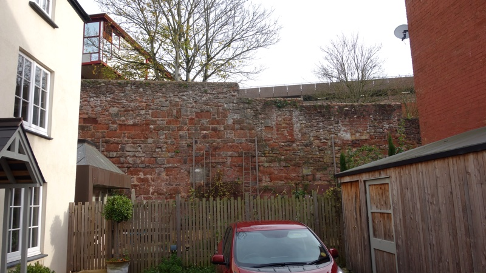 Exeter city wall behind private gardens in Northernhay Street
Despite identifying harm to both conservation areas, the cathedral and St Michael’s church, the city wall and all of the Grade II*, Grade II and locally listed buildings and open spaces it considered, the city council heritage officer’s report concluded, on the basis that “the proposal also has positive effects upon heritage” that the cumulative level of harm “falls below the threshold of substantial” defined in national guidance.
No comparative analysis of cumulative harm vs benefits was included. The city council planning officer instead dismissed many of the historic environment representations from conservation charities and members of the public, saying: “the comments on the impact on heritage assets disagree with the professional views of the council’s heritage officer and the conclusions of the report”.
Phil Bialyk said: “I am convinced this development will have a positive impact on the conservation area” and suggested that the development would “enhance Exeter’s position as a premier retail and cultural destination”. Conservative councillor Keith Sparkes agreed, saying the development would be “an improvement to the area”.
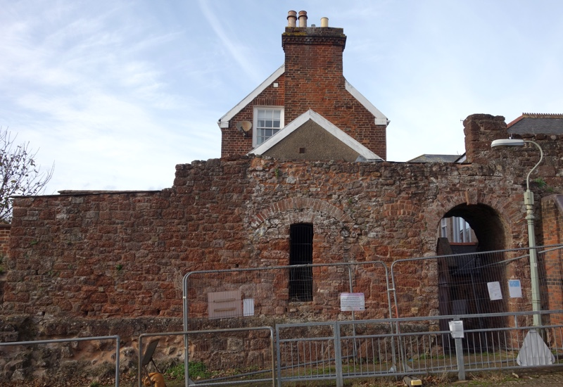 Maddocks Row arch in Exeter city wall adjoining historic housing on Northernhay Street
Matilda Harden of The Georgian Group said: “While the applicant seems to believe this development will amount to ‘less than substantial harm’, it must be noted that this is still harm and it has not been justified to meet paragraph 194 of the NPPF. The amendments completely fail to take any heritage concerns into consideration.
“We continue to firmly object to this scheme which will cause harm to an historic part of Exeter. It continues to be of a completely inappropriate scale and massing and the failure of the applicant to respond adequately to comments is unacceptable.”
Olivia Stockdale of The Victorian Society, a registered Victorian and Edwardian heritage conservation charity, said: “Despite alterations to the proposal, we note that the contextually inappropriate scale of the development remains, and the scheme would therefore still cause significant harm. Under the provisions of the NPPF, we consider this to amount to less than substantial harm, as does the applicant.
“Where we differ, however, is that we fail to see that the inevitable less than substantial harm to two conservation areas, several listed buildings and a scheduled monument has been justified in a ‘clear and convincing’ manner as specified under paragraph 194. We are moreover firmly unconvinced that any harm can be ‘weighed against the public benefits of the proposal’ (paragraph 196) and considered to be acceptable.”
Harlequins co-living and hotel block elevations compared with Northernhay Street housing. Source: LHC Design.
Had the harm to heritage assets been assessed in accordance with Historic England’s recommendations, the requirements of the National Planning Policy Framework and relevant High Court rulings, it would still have had to be clearly and convincingly justified. Neither the developer nor the city council’s heritage officer established such a justification.
Had they done so, the proposals would still have had to pass the “non-weighted balance test” by demonstrating that their public benefits outweighed the harm they would cause. However, in contrast with the attention paid to the impact on heritage assets on one side of the “non-weighted balance test” by Exeter City Council’s officers, many of the claimed economic, social and environmental benefits of the Harlequins redevelopment received very little scrutiny.
The key to assessing the “non-weighted balance test”, according to the city council, is whether the benefits of the redevelopment outweigh any potential harm it may cause, including to heritage assets. If not, the council’s inability to demonstrate a five year supply of development land would not be relevant and the application should be refused.
“We continue to firmly object to this scheme which will cause harm to an historic part of Exeter. It continues to be of a completely inappropriate scale and massing and the failure of the applicant to respond adequately to comments is unacceptable.”
As Historic England said in June, the council would need “to ensure that great weight (NPPF Paragraph 193) is given to the significance of the heritage assets affected in order to deliver a sustainable scheme that offers balance in historic environment terms to provide a sustainable development as outlined in NPPF Paragraph 8”.
Section seven of the planning officer’s report listed all the proposed scheme’s claimed benefits, including the heritage benefits on which the heritage officer also relied in his report. But these benefits cannot be counted twice, on both sides of the “non-weighted balance test”.
The planning officer nevertheless included them in what he collectively described as “public benefits”, which he said “could be anything that delivers economic, social or environmental objectives as described in the NPPF”.
Economic, social & environmental benefits?
The first of the sustainable development objectives defined in NPPF Paragraph 8 is centred on support for growth, innovation and improved productivity. To what extent would the proposed Harlequins redevelopment deliver these?
Exeter’s housing affordability crisis
Exeter became the sixth least affordable city in the UK in 2018 after several years of falling wages combined with rapidly-rising housing costs to price all but the most affluent out of home ownership.
Between 2010 and 2018 average weekly workplace earnings fell by more than 10%, among the worst performers in the Centre for Cities index. During the same period the city’s average house price increased by more than 38%.
As a result, Exeter’s affordability ratio increased by nearly 30%, making only London, Oxford, Cambridge, Brighton and Bournemouth less affordable places to live.
Housing affordability ratio 2018. Source: Centre for Cities.
The affordability problems that come with high housing costs and low wages are one of the principal causes of lagging UK growth, innovation and productivity. And Exeter is consistently well below national averages on metrics used to measure these goals, including the number of business startups per 10,000 people, GDP per worker and the proportion of privately-owned knowledge-intensive business services in the city.
Co-living developers seek to position it as a solution to rising unaffordability, despite its defining characteristic being disproportionately high rents for disproportionately small rooms. Researchers have found that co-living charges per square metre are typically more than double those for “traditional” build to rent one-bed accommodation.
Fresh Property Group, whose management plan for the proposed Harlequins co-living block was submitted with the redevelopment application, manages three other, similar student accommodation blocks in Exeter, one of which is on Queen Street, a few hundred yards from the Harlequins site. Studios there start at £949 per month for 51 week lets. Cluster flat bedspaces at Cricket Field Court, which it also manages, start at £823 per month on the same basis (the Queen Street block does not include these).
However UK co-living scheme charges are typically higher for stays of less than a year. Old Oak, the block cited as an example by JLL as part of the Harlequins application, charges a premium of just over 15% for studios and 25% for cluster flat bedspaces for stays of less than twelve months, so Harlequins co-living rents might reasonably be expected to start at around £1000 per month for cluster flat bedspaces and around £1100 per month for studios for the minimum three month stays specified in the management plan.
And unlike other co-living projects which typically include amenities and services such as room cleaning or bed linen laundry in the rent, these will be optional extras at Harlequins. Nor will there be a bar, restaurant or gym in the building.
At rates more than double those of local private sector rents, the proposed co-living block would not address Exeter’s housing affordability problems, or the drags on growth, innovation and productivity that come with them, but it might very well make them worse.
Economic impact
The economic impact assessment submitted with the Harlequins redevelopment proposals identified Exeter’s largest economic sectors as health, education, retail and business support. However it overlooked the city’s public administration sector despite local economic activity running at almost double the national rate in this area, and ignored the fact that Exeter’s health, education and public administration sectors are almost entirely dependent on public spending.
Exeter has one of the lowest levels of private sector jobs in the country, and one of the lowest ratios of private to public sector employment. It is seventh from bottom in the Centre for Cities index on both metrics. Instead of recognising that Exeter’s economy is largely dependent on public sector activity, the economic impact assessment based its conclusions on the assertion that Exeter is “mainly dominated by businesses in the tertiary sector, which benefits from consumer and local business spending” of the sort likely to be associated with the proposed Harlequins redevelopment.
 Ratio of private to public sector employment 2018. Source: Centre for Cities.
Ratio of private to public sector employment 2018. Source: Centre for Cities.
The economic impact assessment estimated the benefits of spending by co-living block residents by relying on Office of National Statistics household expenditure figures for the average one-person non-retired household across the whole of the UK, then adding a South West regional weighting. This produced a spending estimate of £366.63 per person per week, or just over £19,000 per annum. The 251 proposed co-living block residents were thus estimated to be worth just under £4.8 million each year.
However the figure for average single person household expenditure, with regional weighting, allows just £305 per month for housing costs, which is less than a third of the expected starting rate of £1000 per month for cluster flat bedspaces and less still compared with the £1100 per month the Harlequins studios are expected to cost. The economic impact assessment made no attempt to estimate cluster flat bedspace or studio charges, instead simply describing the development as “affordable”.
Nowhere in any of the published proposals are these critically important figures provided, and nothing was said about prospective rent levels in the co-living block at the planning committee meeting which decided the application. At such rates, around two thirds of the £19,000 each co-living resident is expected to spend each year would be swallowed by rent. This is double the average proportion in the South West.
In addition, letting agents typically require that prospective tenants earn an annual gross salary equal to at least 30 months of rental charges, so eligibility for a cluster flat bedspace at £1000 per month requires a salary of £30,000 a year, and a studio at £1100 per month a salary of £33,000. But average annual earnings in Exeter are just under £25,800, well below the national average of £28,700 which is still not enough to afford a co-living cluster flat bedspace at these rates.
And full-time minimum wage workers between eighteen and twenty years of age earn just over £12,500 each year, rising to £17,000 by the time they are 25. How many young, single employees in Exeter’s health, education or local government sectors are earning enough to afford co-living?
Average weekly workplace earnings change 2010-2018. Source: Centre for Cities.
The economic impact assessment also states that 100% of housing costs are extracted from the local economy in which they are paid, and that the proportion of each resident’s overall aggregate expenditure that stays in the local economy is just 60%. Removing a realistic estimate of housing costs from the £19,000 each co-living block resident is expected to spend each year means a dramatic fall in the residual sum spent locally, leaving just £111.78 per person per week, or a total just over £1,450,000 each year for the whole block, 30% of the sum claimed by the developer.
Following the economic impact assessment methodology, this has the consequence of reducing the co-living block’s operational expenditure-driven job creation value to just over seven net jobs, and its net additional annual Gross Value Added to the Exeter economy to just over £220,000, less than half the amount claimed.
The operational viability and economic value of the proposed hotel was also calculated by relying on averages. These were sourced from a fourteen year-old study of the Exeter hotel market and four year-old national survey-based estimates of tourism activity. The tourism activity report says: “The methodology and accuracy of these sources varies, and therefore the estimates can only be regarded as indicative. Because of the data sources and modelling process, there will be a potentially large margin of error associated with individual figures, with small numbers being particularly prone to such errors.”
The six tourism surveys used each relied on multiplying small survey samples to produce national figures which were then combined before being subdivided again into regional then subregional figures. This methodology has not been independently validated since 1994.
The economic impact assessment then took each of these figures and further subdivided them, compounding the factor by which a small error would be magnified. It ignored the decade-long gap between the two sources, then took two further averages and multiplied them all together to produce the headline figure which was reproduced in the planning officer’s report: a total annual visitor expenditure figure of £3.5 million
However variations of just 15% in each of the estimates combine to reduce this to £1,844,000, only just over half the amount claimed. And this is without allowing for the 25% of visitor expenditure which the assessment states will not be spent in Exeter or the 50% that would be displaced from other hotels in the city, which together further reduce the figure to £461,000.
In addition, were the hotel were to fail, or no operator be found, as none had been by the time the city council planning committee met to approve the development, there would be nothing to prevent the owners repurposing it as co-living or student accommodation beyond a simple change of use class.
Average house price change 2010-2018. Source: Centre for Cities.
The economic benefits that were initially claimed for the development were subsequently revised down to reflect changes to the proposals, then revised down again following further changes, although these later revisions did not make it into the city council planning officer’s report. And this dramatically overstated the development economic benefits by presenting the headline investment and expenditure figures from the impact assessment without the qualifying explanations that accompanied them, which made clear that the benefits it estimated for the city were far smaller.
So the fact that a significant proportion of the operational spending associated with the development would not benefit Exeter’s economy was not mentioned, nor was the likelihood that compound errors in research sources and estimate variances would produce figures orders of magnitude smaller than those that were presented.
Neither was the effect of the coronavirus pandemic on the economic estimates considered in the planning officer’s report or at the planning committee meeting, despite the applicant’s agent acknowledging in a revised planning statement that “some of the assumptions about future economic activity, such as visitor numbers and spending, will be impacted”.
The statement went on to say the impact would only be short term, claiming that “it is anticipated that in the long term figures will return to pre-COVID levels” without supplying any evidence to support this claim.
It also amended the applicant’s previous claims about post-pandemic job creation and local expenditure. The co-living block and hotel now had the “potential” to generate expenditure and the development “might” create jobs which “might” add to the local economy.
The statement nevertheless concluded that the development “clearly achieves the economic objective of achieving sustainable development, as set out in the NPPF Paragraph 8”.
Housing affordability ratio change 2010-2018. Source: Centre for Cities.
The second sustainable development objective defined in NPPF Paragraph 8 is centred on meeting present and future housing needs while upholding design and amenity standards. To what extent would the proposed Harlequins redevelopment satisfy these criteria?
Space standards
The government introduced national minimum space standards as part of a 2015 housing review which was incorporated in planning decisions under the National Planning Policy Framework. The new “nationally described space standard” requires minimum floor areas for dwellings of different sizes based on the number of people they accommodate. It also specifies minimum widths for bedrooms and minimum floor areas for storage, which it says are “an integral part of the space standard” and “cannot be used in isolation from other parts of the design standard or removed from it”.
The proposed Harlequins co-living block would contain 26 cluster flats, with between four and seven bedspaces in each, as well as 99 studio flats of which fourteen are designed to be accessible to wheelchair users, altogether providing 251 bedspaces. There is no indication in the application documents that sharing bedspaces will be prohibited. As studios in the Queen Street block managed by Fresh Property Group are advertised as suitable for sharers there seems no reason to expect the Harlequins bedspaces to be limited to single occupation.
None of the proposed Harlequins cluster flats or studios would meet the national minimum space standard, whether singly-occupied or otherwise. According to the submitted plans, the cluster flat bedspaces would be typically 2.5 metres wide by 5 metres long, including a corner shower and toilet space, while the studios would be typically 3 metres wide by 6 metres long, including a corner shower space and toilet as well as a kitchenette.
The national minimum space standard for a one person dwelling is 37 square metres (if it has a shower instead of a bath). At 18 square metres the studios would be less than half this size, and smaller than a typical single garage.
The cluster flat plans do not include the required storage space and do not meet the minimum room width requirement. Nor do their designs recognise that the minimum standards for dwellings intended to accommodate several people are not intended to include the long corridors which are a feature of the flats in the proposed block. One six bedroom fifth floor flat shown on the plans includes a corridor that consumes more than 21 square metres of its internal space.
Harlequins co-living block first floor plan (excluding studios over shops on Queen Street).
Source: LHC Design.
Despite the clarity of the government guidance, the city council planning officer’s report said: “Officers do not consider that the local or national space standards should be applied to co-living housing schemes, as they are not standard dwelling types.”
Phil Bialyk said: “the development provides greater space standards than apply in respect of the conversion of office buildings to residential”, favourably comparing it to the “slums of the future” created by permitted development rights, of which 22% nevertheless meet national minimum space standards. He was apparently unaware that the Secretary of State for Housing, Communities & Local Government announced in September that the national minimum space standard also now applies to all homes delivered on this basis.
Labour councillor Laura Wright, who is Executive Portfolio holder for Council Housing Development and Services, said: “It’s the size of these units that is really, really worrying me. To put it into context, the average Travelodge bedroom space is 27.8 square metres. I don’t think living in a Travelodge-equivalent space for any length of time is acceptable.”
Keith Lewis said: “The quality and size of the co-living accommodation are sub-standard and akin to student living rather than providing quality accommodation for working people for whom it would be a more permanent home. Living spaces should be better than the equivalent of a hotel room. Approval of such small living spaces will set a dangerous precedent.”
Diana Moore added: “The report sets out no reason for the recommended departure from the nationally described space standards. We have to remember these are intended as primary, permanent homes not accommodation for nine months.”
Amenity & flexibility
The city council planning officer sought to justify the proposed co-living block’s failure to meet the national space standard on the grounds that its residents “would have the benefit of shared facilities”, which he emphasised would be provided on all floors of the building. Following reductions to amenity space included in previous plan iterations, these facilities amount to two rooms on the lower ground floor of the block, two more on the ground floor, and one each on the upper ground and first to fifth floors, all of which would also be kitchens.
If the building’s 251 bedspaces were limited to one occupant each, this would offer each resident an extra 2.7 square metres of space. However on several upper floors only 42 square metres of amenity space would be shared between more than 50 bedspaces. The planning officer’s report also failed to mention that the proposed co-living management plan said that the building’s communal spaces would be available for private hire.
In the context of the coronavirus pandemic, not only would these combined communal spaces be limited to supplying safely-distanced space for just 53 people in total, the floor plans show long corridors which are only 1.5 metres wide and so too narrow to pass others at a safe distance. Each of the first to fourth floors includes a 22 metre corridor which services eleven studio and two cluster flats, one with six bedrooms and another with seven. If singly-occupied, this would mean 24 people using each of these corridors to access their bedspaces.
Chris Dadds sought to reassure public consultation respondents who suggested that “the small personal spaces and shared facilities will be a potential breeding ground for future outbreaks” by saying that, in the advent of another pandemic, the Harlequins co-living block “would have a management team dedicated to ensuring the safety of residents and would work with the resident community to put in place measures around social distancing”.
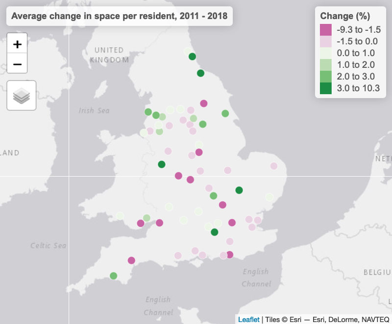 Average change in space per resident 2011-2018. Source: Centre for Cities.
During the past decade space per person in Exeter’s residential accommodation has fallen at a rate among the fastest in the country. This is despite city council planning policies including a Residential Design Guide, which was introduced in 2010 to define the council’s minimum design standards for new residential development. As well as setting space standards (which the Harlequins redevelopment proposals do not meet), the policy defines “fit for purpose” building design which it says applies to “all dwellings” and “will be applied consistently”.
It says: “Without minimum standards, private house builders tend to minimise room sizes so reducing flexibility and adaptability. As the pressure for increased densities grows the requirement for minimum standards is ever more important. All dwellings, including conversions, should have sufficient space to create comfortable homes, without people living on top of each other.
“They should be adaptable to occupiers’ changing needs over time, and have sufficient space and storage to accommodate sufficient furniture and equipment to enable comfortable living. Space standards are an important factor in delivering sustainable development.”
In her foreword to the guide, Labour councillor Rachel Sutton, who was then Executive Portfolio Holder for Sustainable Development and Transport, said: “Houses and flats should be built to last, have generous space to meet the requirements of modern living and be adaptable as people’s needs change through life.” She said the guide “clearly outlines the criteria by which all housing proposals are assessed, from an individual house to the largest estate”.
The guide goes on to say it “explains the principles that developers should adopt and the procedures that should be followed to meet the challenge of designing higher density development without compromising design quality or residential amenity. Recent trends in house building have seen the development of some dwellings which are far too small to be sustainable. These designs are inflexible and not able to meet the changing needs of people over time.”
Harlequins co-living block lower ground floor plan showing amenity space. Image: LCH Design.
Exeter’s Local Plan also includes a Residential Layout and Amenity policy which stipulates that “residential development should ensure a quality of amenity which allows residents to feel at ease within their homes and gardens”. In a planning statement accompanying the Harlequins redevelopment application, JLL claimed that “this relates to the concept of a more traditional housing model, which the co-living approach does not adhere to”, and said that “personal outside amenity space is not a requirement” for the co-living model, in which “residents utilise the wider city spaces for their informal recreation, rather than more traditional gardens”.
The statement went on to say: “The amenity spaces provided for those living within the co-living accommodation is [sic] therefore reflective of the needs of the occupiers and the community they live in”. It did not explain how the 2.7 square metres of communal space provided per bedspace addresses the amenity requirements set out in the council’s planning policies, or how the design of the co-living block makes it adaptable to its occupiers’ changing needs over time.
At the planning committee meeting that approved the Harlequins proposals, Rachel Sutton described the city as “moving into a new phase” with the redevelopment, saying “life is a lot easier” when you can “move from one rented flat or bedsit to another in the back of your mate’s car because your possessions probably fit into a couple of bin bags”. She continued: “There are young people, frankly, the last thing they want is a garden.”
Labour councillor Rob Hannaford, who is a member of the planning committee, said: “The idea that any of us should be satisfied with our young people having a life that can be scooped up in two bin bags is not the vision that I have for our young people or Exeter. I am concerned with the longer term implications for some of our younger people, who this development seems to be marketed at. They could be in these units for months if not years.”
The council planning officer nevertheless considered the quality of amenity in the proposed block to be “acceptable”.
“The idea that any of us should be satisfied with our young people having a life that can be scooped up in two bin bags is not the vision that I have for our young people or Exeter.”
Rob Hannaford, Exeter councillor
Housing need
Despite the economic uncertainty created by the pandemic, particularly for retail-oriented city centres such as Exeter’s as the shift towards online shopping has accelerated, the developer not only claimed that “there is a demand within Exeter for bespoke new high-quality, managed rental accommodation” which the “proposed co-living accommodation will meet”, but that this demand has increased since the advent of COVID-19.
No evidence was supplied to support either of these claims, although the developer did provide substantive evidence of the demand for student accommodation in Exeter at the initial public consultation, saying the city needs 8000 more student beds.
The application documents instead presented the proposal to supply co-living accommodation as evidence of demand for its provision, using statements such as “the background to co-living remains the same, which is for high density living aimed specifically at those, typically young professionals, who are seeking good quality, well located accommodation which is centrally managed”.
Phil Bialyk echoed these claims at the October planning committee meeting which decided the application, when he said: “There is evidence, in my view, that there is a demand for this type of co-living”. We asked Exeter City Council for evidence of such demand in Exeter but it declined to supply any. We also asked Exeter City Council to identify local examples of bespoke new high-quality, managed rental accommodation that are not purpose built student accommodation, but it again declined to do so.
Housing supply
In addition to conflating supply with demand, the Harlequins developer claimed that the co-living block would increase the supply of housing in Exeter, not by delivering new housing itself, but by “freeing up existing capacity” and “reducing pressure on traditional houses in the city” to “free up these homes to allow families to live there, rebalancing the mix of communities in the area”.
Claiming “significant parallels” with a 2019 appeal decision in which a planning inspector allowed the construction of a 166-bed student accommodation block at Walnut Gardens on St David’s Hill, the developer said the proposed Harlequins co-living block would contribute to the council’s housing delivery targets, which are set by the government, “through reallocation of some residents moving from established dwellings to the scheme”.
However the Housing Delivery Test which the government uses to assess the extent to which development supplies housing to meet local targets explicitly refers to dwellings as defined in MHCLG guidance, which says: “A home or dwelling in the Housing supply; net additional dwellings statistics is defined in line with the census definition, which defines a dwelling as a self-contained unit of accommodation. Self-containment is where all the rooms (including kitchen, bathroom and toilet) in a household’s accommodation are behind a single door which only that household can use.”
It continues: “Communal establishments, i.e. establishments providing managed residential accommodation, are not counted in overall housing supply”. Student accommodation is explicitly defined as a form of communal establishment, and the definition also says that purpose-built flats are only counted in housing supply calculations if they are separate, self-contained dwellings.
The shared amenity and kitchen spaces on which the Harlequins proposals rely to justify their failure to meet minimum space, amenity and design standards entail that none of the planned cluster flats or studios qualify as separate, self-contained dwellings according to the government’s definition, and so would not be counted for the purposes of housing supply measurement. A dwelling cannot be both self-contained and dependent on communal space at the same time.
 Purpose Built Student Accommodation on Bampfylde Street
Purpose Built Student Accommodation on Bampfylde Street
An attempt by the developer’s agent to refute this definition made on the day of the planning committee meeting unintentionally pointed towards the pertinence of the government’s definition. The agent cited 2019 government guidance on the Housing Delivery Test, quoting the first sentence of a section concerning student accommodation: “All student accommodation, whether it consists of communal halls of residence or self-contained dwellings, and whether or not it is on campus, can in principle count towards contributing to an authority’s housing land supply.”
However, apart from the fact that the developer insists that the Harlequins co-living block would not be student accommodation, which is the form of accommodation to which this guidance applies, the agent failed to quote the rest of the guidance, which included the qualification that it could apply to purpose-built studio flats, but only when they fully function as independent dwellings.
In an appeal decision concerning a co-living block in Feltham earlier this year, a planning inspector clarified the functional characteristics necessary to qualify as an independent dwelling, which include the provision of private external space and independent access to and from each dwelling, as well as not relying on communal facilities such as shared kitchens.
Despite the city council planning officer’s report supplying no evidence that the co-living block would contribute to housing supply numbers, and despite clear government guidance and case law to the contrary, the planning officer said that Exeter City Council nevertheless agreed with the developer’s claim that the co-living block would supply housing to meet its government-set delivery targets, and so counted this as one of the benefits of the application.
Affordable housing provision
On the basis that the co-living block would provide dwellings, the council planning officer then stated that the Exeter Core Strategy policy on the provision of affordable housing would apply. This says: “On sites capable of providing three or more additional dwellings (irrespective of the number of dwellings proposed) 35% of the total housing provision should be made available as affordable housing for households whose housing needs are not met by the market. At least 70% of the affordable housing should be provided as social rented housing.”
Exeter also has an Affordable Housing policy which provides more detailed guidance on how the core strategy policy will be implemented. This says: “The requirement to provide affordable housing will apply to all proposals for residential development, including new build, conversions and mixed use schemes” as well as “schemes involving non-self contained dwellings and the sharing of amenities”.
However, the council planning officer went to say that only 20% of the co-living block would need to be affordable housing, on the basis that the block constituted a Build To Rent development so specific NPPF guidance would apply instead. The NPPF considers Built to Rent as an “asset class within the private rented sector” and says that such schemes “should meet any relevant local and national planning policy requirements”.
“The sheer inability to be packaged and compartmentalised into an easily digestible definition is one of coliving’s greatest strengths.”
The most commonly referred to definition of affordable housing is set out in the NPPF, which says the rent must be “at least 20% below local market rents”. The approval condition recommended by the planning officer does not prevent the scheme operator charging 80% of the rent levels in the rest of the block, which are likely to be double typical Exeter rates, as these would be the only other co-living rents in the city at the time of opening and so constitute the local market rents referred to in the definition.
And the approval condition only gives “first priority” for these discounted bedspaces to essential local workers, which presumably means that others will be free to take them if key workers do not fill them as they become available. As one third of key workers earn £10 an hour or less and the lowest NHS pay band for a nurse is under £20,000 a year, the bedspaces are likely to remain unaffordable for most such workers in any case.
Michael Mitchell, calling the development a “poorly thought through scheme” that “doesn’t constitute housing, or providing a home” said: “If this development had been about providing 20-30 year-olds with affordable rented housing in the city centre I’d have both hands in the air. It is not.”
The third sustainable development objective defined in NPPF Paragraph 8 is centred on protecting and enhancing our natural, built and historic environment and moving to a low carbon economy. To what extent would the proposed Harlequins redevelopment deliver these aims?
Streetscape
A striking feature of the Harlequins site is the spiral vehicle ramp which feeds the Guildhall shopping centre multi-storey car park on the other side of Paul Street, described by Historic England as “cutting through the site”. The existing Harlequins development was constructed around this ramp when it was built in the mid-1980s, and the redevelopment plans have followed the same approach despite the existence of two street-level vehicle entrances to the Guildhall shopping centre on Paul Street.
The decision to integrate the ramp into the Harlequins redevelopment appears to cement the Guildhall shopping centre multi-storey car park, and the poor quality public realm that comes with it, into the fabric of the city despite the commitment to replace it with human-scale street frontage including shops, offices and housing framed in the Exeter City Centre Vision for a Green Capital.
The redevelopment proposals include moving the car park barrier to street level in order to reduce queueing on the ramp. The developer claimed this would reduce vehicle emissions, without explaining how, despite going on to say “the impact of the scheme would not be significant in air quality terms”. Keith Lewis said: “The proposed location [of the barrier] only allows for one car to queue before obtaining a ticket for entry. This could have a negative impact upon traffic in Paul Street if a small number of motorists are tempted to wait for the barrier to rise, and block through traffic.”
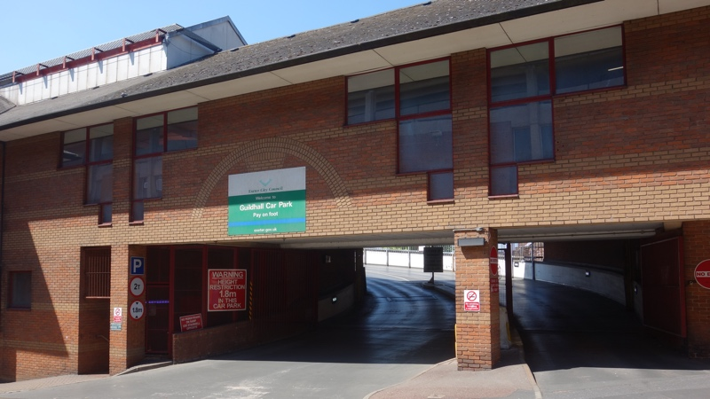 Guildhall car park ramp entrance and exit at Harlequins shopping centre
Devon County Council, responding to the application in its role as Local Highways Authority, said: “In the rare times when the car park becomes full additional signage would re-divert traffic elsewhere to other car parks in the city.” It described the use of signage as a “forward-thinking concept” which “would aim to change people’s behavioural patterns in the interest of creating a greener and more sustainable approach to how the public interaction [sic] with the city.”
The proposals also include removing the car park queue filter lanes in both directions. The county council said, while acknowledging that vehicles waiting to enter the Guildhall car park currently queue on Paul Street at busy times, which would prevent other vehicles passing were the filter lanes to be removed, that vehicles would “be able to see the car park is full” and “move onto other car parks in the area”. It did not explain how those vehicles would pass queueing traffic to do so once the filter lanes had been removed.
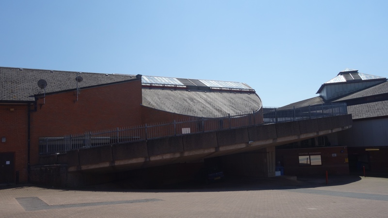 Guildhall car park ramp rear view
Despite acknowledging the “heavy traffic which moves up and down Paul Street” and “large number of heavy service vehicles using the road”, and that the development “is unlikely to have a perceivable effect on the day-to-day operation of Paul Street, Queen Street or the existing signalised junction”, the developer nevertheless claimed that the proposals “aim to reduce traffic flows along the highway” and their benefits included “reducing the presence of the car”.
These claims appear to rest on plans to widen the pavements alongside the development and create raised crossover points in four places, including at the top of the street, having removed the car park filter lanes. The developer describes these changes as an opportunity to “significantly improve the highway along Paul Street in order to prioritise pedestrian movement along its length” and “reconfigure Paul Street and Queen Street junction to reduce traffic flows and reduce the conflict between pedestrian and vehicle movements creating a better pedestrian environment”.
Pedestrians are expected to share the widened pavements with cyclists, despite Department for Transport design guidance published over the summer which says: “Shared use routes in streets with high pedestrian or cyclist flows should not be used.” It continues: “On urban streets, cyclists must be physically separated from pedestrians and should not share space with pedestrians. Where cycle routes cross pavements, a physically segregated track should always be provided. At crossings and junctions, cyclists should not share the space used by pedestrians but should be provided with a separate parallel route.”
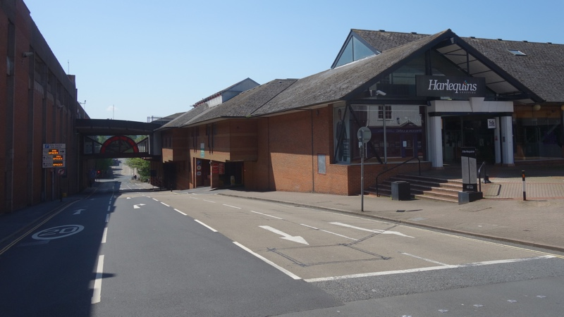 Guildhall car park ramp access filter lanes in Paul Street with ramp flyover in background
Alex Tait of Exeter Cycling Campaign said: “The shared path proposed alongside the development is no longer compliant with national design guidance”. In a detailed response to the scheme, Exeter Cycling Campaign proposed extending the existing Queen Street pedestrian zone to the top of Northernhay Street, with the closure of the top of Paul Street to through traffic to create a plaza in front of RAMM.
However Devon County Council rejected Exeter Cycling Campaign’s concerns about the new government design guidance, saying “shared use may be appropriate in some situations, such as at and around junctions where cyclists are generally moving at slow speed, and in situations where high cycle and high pedestrian flows occur at different times”.
The county council did not supply any evidence that such flows would occur at different times on Paul Street, or address the issue that the proposed shared route alongside the development is not situated at a junction. Nor did it respond to the cycling campaign’s street closure proposals.
Public realm
In its initial response to the Harlequins redevelopment plans, Historic England said: “The works to the streetscape have been viewed as offering an opportunity to enhance this section of the conservation area through the elevation of the pedestrian over the car and the setting back of the buildings to open up the street. Although the building will be set back it will nonetheless be significantly taller than the existing structure, and therefore, the visual relief offered by the lower form of the existing Harlequin Centre will be lost.”
Despite subsequent revisions, the plans still include a seven storey tower which would be three storeys taller than the Guildhall shopping centre beside it. Exeter City Council’s planning officer nevertheless described the proposed redevelopment as “a stepping stone between the very large grain of the Guildhall shopping centre to the south and the fine grain of the residential areas to the north and west”, and the developer claimed it would reduce the existing Paul Street “canyon effect”.
Harlequins co-living block elevation showing Guildhall car park ramp and ‘urban oasis garden’. Image: LHC Design.
The redevelopment proposals include the creation of a “pocket park” at the North Street end of the site, which would replace the existing surface level car park and would include a “stump garden of inverted tree stumps set amongst an area of lush wildlife-friendly planting”. It would be linked to a new footpath, which would be planted as a “green ribbon” alongside the section of city wall which borders the site.
The area underneath the Guildhall car park ramp would become part of what the developer describes as an “urban oasis garden” which would “include an entirely new area of public realm of unique character and appearance” where new planting would “take advantage of the uniquely sheltered micro-climate and shading created by the existing car park ramp and adjacent proposed development structures which over sail parts of the space”.
Its “biophilic design” would create a “restorative space within the noise and activity of the city centre”. The city wall “interpretation centre” would be located here too, behind a car park ramp support. It would be just 4 metres wide and 5 metres deep. While this is larger than the co-living block studios it is still smaller than a typical single garage.
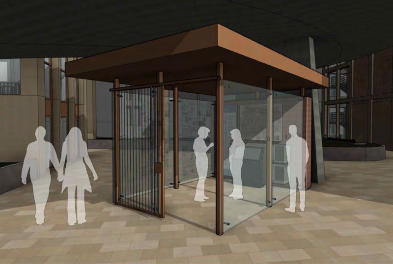 Exeter city wall “interpretation centre”. Image: Design & Access Statement.
In addition, a green wall would be introduced on the north-west hotel block elevation which would take twenty years to establish (Historic England expressed concerns about its viability) and some of the development roofspace would be planted with sedum, which would be beneficial for wildlife. Bird and bat boxes would also be installed.
An ecology assessment report commissioned by the developer produced the striking claim that these improvements, taken together, would produce a net biodiversity improvement of 616%. However, as the biodiversity value of the existing few shrubs and small trees is just 0.18 “biodiversity units”, and would increase to 1.26 units, this headline percentage gain is only intelligible when presented in context, which it was not in the city council planning officer’s report.
As is the norm in Exeter residential and commercial development, despite the city’s aspiration to be “recognised as a leading sustainable city and global leader in addressing the social, economic and environmental challenges of climate change and urbanisation”, neither the carbon emissions associated with demolition of the Harlequins shopping centre nor those associated with the construction of the proposed replacement buildings, which in this case rely on significant amounts of concrete in pilings, frames and cores, were considered in the planning officer’s report.
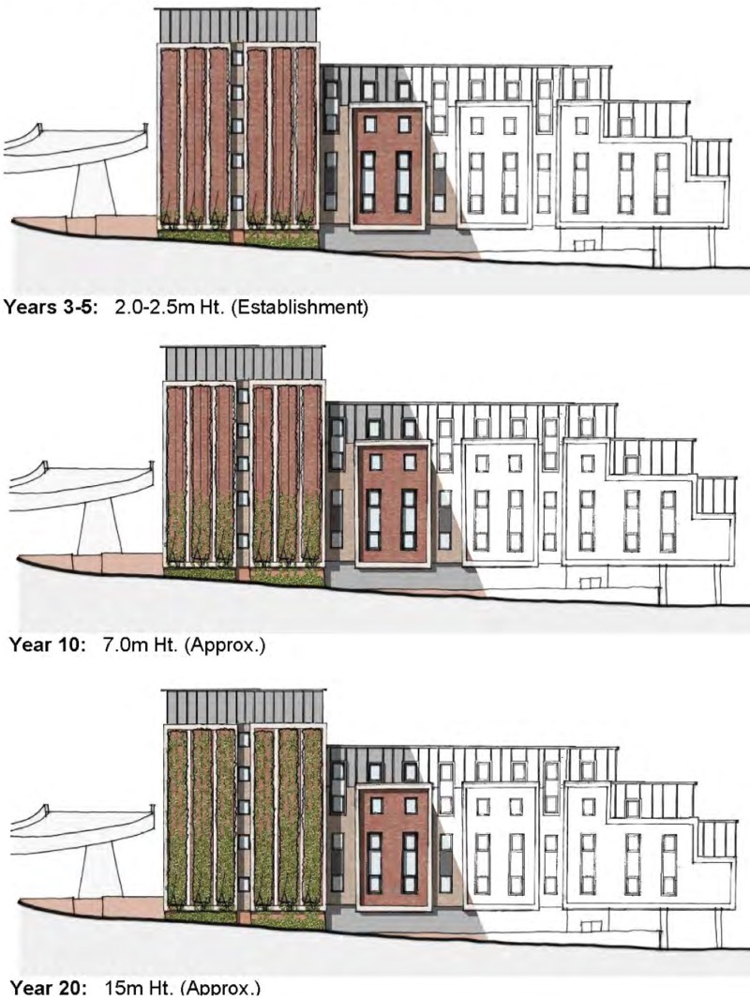 Hotel green wall development over twenty years. Images: Design & Access Statement.
So had the harm to heritage assets that the proposed redevelopment would cause been clearly and convincingly justified, would its claimed economic, social and environmental benefits be sufficiently significant to outweigh that harm? In other words, would it have passed the “non-weighted balance test”?
Relying on the city council heritage officer’s conclusion there would be less than substantial harm to the setting of heritage assets, the city council planning officer’s report summarised the scheme’s principal benefits as follows: “
- economic growth in the form of job creation and expenditure in the city centre
- delivery of housing to help with the council’s lack of five year housing supply
- provision of affordable housing
- significant public realm improvement works along Paul Street and on the corner of Paul Street and Queen Street
- improved public access and setting of the city wall, with ‘interpretation centre’
- new architecturally distinctive/energy efficient buildings with active frontages facing onto Paul Street
- biodiversity net gain of 616%
- remediation of contaminated land; and
- reduction in surface water flow from the site.”
It also noted £25,000 contributions towards city wall management, maintenance, repair and promotion and £100,000 for “public open spaces within the area” to compensate for the lack of outdoor amenity space included in the development, but did not address the inclusion of heritage benefits on both sides of the “non-weighted balance test”.
The report concluded that the “non-weighted balance test” had been satisfied, and said: “There are no adverse impacts of the scheme that are considered to significantly and demonstrably outweigh the economic, social and environmental benefits of the scheme when considering the NPPF as a whole.”
Diana Moore said: “The harm caused to the setting of the heritage assets requires clear and convincing justification, but the developer has failed to justify the harm that will occur on the wider area and heritage assets. It is claimed the public benefits of the scheme outweigh this level of harm, but this has not been fully justified. In particular I am concerned at the number of times the report recommends setting aside material conflicts with national guidance, standards or the council’s own policies.”
“I am convinced this development will have a positive impact on the conservation area.”
The Harlequins redevelopment consultation generated 383 comments from the public, of which 99% were objections. John Allan said: “Like many Exeter residents I remain appalled by this greedy development proposal.” Rebecca Wells said: “It is a solid, brutal, overbearing block which could be anywhere. Such a building in the heart of Exeter is completely inappropriate.” Andrew Simson added: “The developers are obviously trying to cram as many people as possible into a very cramped environmment. The motivation for this is obviously to make as much money as possible and as fast as possible and can hardly be said to be in the interests of locals.”
Vanessa Cecil said: “It would ruin a historic area of Exeter and render it no different from numerous other unattractive city centres. Not only is this utterly unwanted but it is unnecessary. Proper, decent housing is required, not units tantamount to student accommodation.” Jean Baker said: “We need housing for residents […] real accommodation for those who could help to regenerate this rapidly declining city. The de-facto outcome will be that the whole building will become student accommodation.”
Marsha Hunt said: “Young residents are the future of our city. They deserve more than a space in a hall of residence to start their working life.” Penelope Dodd added: “Exeter is in danger of becoming a city of vast accommodation blocks. We should be enhancing these areas with mixed residential areas so that people can work, bring up families, bring back the heart to this city.”
Dr Shaun Curtis said: “This city centre site is too sensitive for the imposition of featureless and derivative architecture, especially at the scale proposed. We need a completely different approach, where the development team is forced to think imaginatively about design and context, rather than returns on capital employed and the maximisation of residential development margins.”
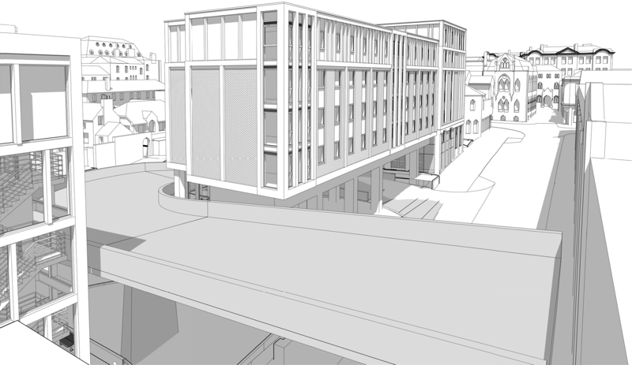 Indicative view of relative building heights from Guildhall car park top deck. Image: LHC Design.
Residents launched a campaign, Save Our Historic Exeter, soon after the initial application was submitted and organised a petition which was signed by more than 4200 people (of whom over 2000 were Exeter residents). The petition was presented by organiser Andy Robinson on behalf of the campaign to the July city council meeting, where a full debate on the issue was expected in accordance with the city’s petition scheme. It was, however, controversially referred to the September planning committee meeting by the Lord Mayor on the grounds that Mr Robinson, in presenting the petition, had mentioned the planning application which was the petition’s subject.
The petitioners urged the council to research and develop new policies to safeguard Exeter against inappropriate development, including a comprehensive housing needs assessment and policies to address affordable housing, co-living, student accommodation, conservation areas and heritage assets. Andy Robinson said: “There are huge gaps in planning policy. We have seen many buildings going up without any respect for historic Exeter, bringing no public benefit and only benefiting investors who are, in most cases, not based in our city and may not even be in the UK.
“Exeter City Council, it seems, does not have the resources to give them proper scrutiny; developers’ claims and conclusions therefore have to be taken at face value and, inevitably, what is proposed is overwhelmingly about profit. It is not concerned about protecting Exeter, its heritage and its long term vision and it certainly is not about benefitting the people who live here.”
Daniel Rudham, a resident who backed the petition, said: “The thousands who have signed the petition say: stop; listen to the people who live and work here. The council must make sure that there are planning rules to ensure Exeter develops in ways which protects our heritage and environment and addresses the needs of local people. It’s clear that the council lacks the resources and policies to deal with the threat of international developers taking advantage. But they need to make proper use of the powers they do have to ensure architecturally imaginative buildings worthy of a historically important city are built.”
Joy Wrightson, a local resident, said: “Large new developments designed to make the developers rich but which bring little to the city in terms of amenity or architectural value are already beginning to dominate the central skyline. We want the council to have properly up to date policies so that control of planning isn’t always in the hands of the developers and consultation with residents is more than a tick box exercise.”
Diana Moore, who presented the Save Our Historic Exeter petition to the planning committee in September, said: “4000 signatures demonstrate the strength of feeling on how thoughtless development is damaging our great city but not providing the homes we need. There is a growing feeling among Exeter residents that development isn’t benefiting people who live in the city or creating thriving communities.”
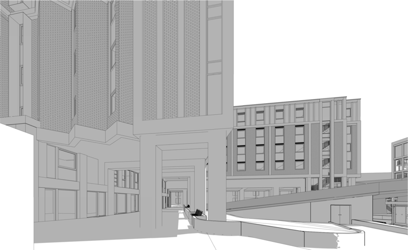 Indicative view of outside amenity space beside co-living block lower ground floor.
Image: LHC Design.
Exeter City Council published a decision notice in August which said it would define its policy position on student accommodation and co-living at the October Executive committee meeting, and Phil Bialyk confirmed in September that a co-living policy was in prospect. Had the Executive done as planned, the city council would have ratified its decision at its meeting later that month, the week before the planning committee meeting that decided the Harlequins application was held.
We asked Exeter City Council why this decision was not taken at the meetings as announced, and when it would be taken instead. We were told: “The matter was withdrawn as the appropriate way to develop new policy is through the local plan process and we will therefore be developing such a policy as part of the new local plan in due course.” We also asked why the development of this policy was not mentioned in the officer’s report to the planning committee, and were told: “The existing policy framework was set out within the report and provides the correct framework for determining the application.”
However, the delivery of most of the planning policy documents that make up Exeter’s Local Development Scheme has been been postponed because of the coronavirus pandemic. In addition, the Greater Exeter Strategic Plan stalled this summer, specific supplementary planning documents such as the Code for Sustainable Homes that was promised in 2019 have been “paused pending the outcome of the Government’s Future Homes Standard consultation” and the government is in the middle of a consultation on planning reform which threatens to turn the current system on its head, introducing a completely new local plan production and adoption process.
“If this development had been about providing 20-30 year-olds with affordable rented housing in the city centre I’d have both hands in the air. It is not.”
Michael Mitchell, Exeter councillor
Under the current system, it takes an average of nineteen months simply to adopt a local plan, with some taking as long as five years. And that is without factoring in multiple earlier stages in local plan development, which also take years. It would be foolhardy to bet on when a new Exeter Local Plan might be adopted, but it looks like a racing certainty that the city will not have adopted new policies on co-living or student accommodation at least until after the Harlequins redevelopment has been completed, which is currently scheduled for 2022.
Diana Moore said: “This is the first co-living development to be determined by the council. The council does not have policies which provide a basis for determining a co-living application, which at this point is no more than an ill-defined brand. Other local planning authorities have sought to address this weakness by adopting specific co-living policies. There is no reason Exeter City Council should not do so too.”
Keith Lewis said: “We would like the council to move quickly to develop supplementary planning guidance, like some other cities, to set a minimum and decent standard for co-living accommodation and would urge that no such accommodation is approved in the city until standards are adopted.”
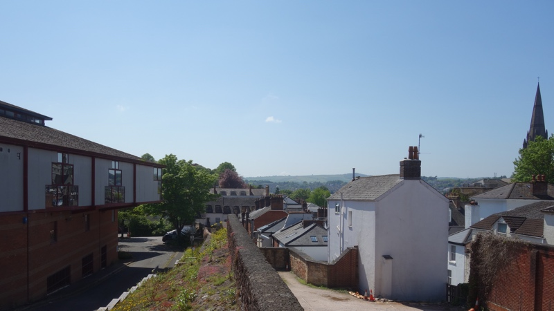 Harlequins shopping centre in context with Exeter city wall and Northernhay Street housing
One such example is the new London Plan, which includes a policy on co-living development which, despite not being formally adopted, nevertheless carries significant planning weight and constitutes a material consideration in planning decisions. If defines what it calls Large-Scale Purpose-Built Shared Living and sets out minimum requirements for adequately functional living space and layout and, because it is not considered suitable as a form of affordable housing itself, requires developers to pay cash in lieu contributions towards conventional affordable housing provision off site.
Manchester City Council also adopted policy on co-living earlier this year, which it introduced as a material planning consideration on an interim basis despite itself being in the middle of the development of a new local plan. It followed a comprehensive two stage consultation and was based on a report which included extensive comparative research into co-living development and policy elsewhere which sought to clarify the extent to which its own policy should be based on specific local considerations. Residents of St David’s submitted the report to Exeter City Council during the Harlequins consultation.
The policy included several notable provisions, including that co-living schemes “must demonstrate that they command support from recently arrived or new employers” located nearby, with the size and scale of the developments “underpinned by the generation of employment opportunities from those employers” and a “robust justification demonstrating evidenced need” provided for each scheme which showed a “clear link between the need to recruit and retain staff” and the development.
Co-living schemes in Manchester are also required to demonstrate how they comply with the city council’s adopted space standards. They must only accommodate “working households, or households actively seeking work” and prohibit “letting to students”, must impose maximum stays on short-term studio lets (the example given is six months), must charge affordable rents and include a “conversion plan to demonstrate how the building could be repurposed”. They cannot directly contribute to the delivery of affordable housing targets, so must indirectly do so via cash in lieu contributions.
“We would like the council to move quickly to develop supplementary planning guidance, like some other cities, to set a minimum and decent standard for co-living accommodation and would urge that no such accommodation is approved in the city until standards are adopted.”
Keith Lewis, Exeter Civic Society
We asked Exeter City Council why the planning officer’s report on the Harlequins application did not consider or refer to any other local authority policies or their supporting research, and were told, despite Manchester City Council having done so, that “it would not be appropriate to refer to a policy derived from another authority as the evidence base for their policy will not be the same as for Exeter.”
Manchester City Council’s policy development research also warned that co-living has important implications for council tax, including collection risks due to short tenures and revenue risks from high proportions of low-banded cluster flats in such developments. The city’s resulting policy accordingly requires co-living operators to take responsibility for council tax collection risks and pay the council directly for each block.
Exeter City Council’s planning officer mentioned council tax just once in his report, simply saying: “The co-living block will generate council tax”, but the management plan submitted with the application makes clear that individual tenants, and not the operator, would be responsible for payments. We asked Exeter City Council why the risks to council tax revenues in co-living developments were not identified and addressed in the officer’s report, but it declined to respond.
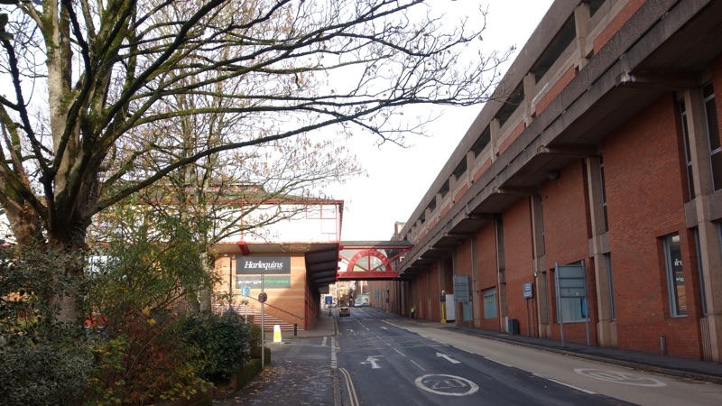 Harlequins shopping centre in context with Paul Street and Guildhall car park
Had Exeter City Council adopted a formal co-living policy before its October planning committee meeting, even only as an interim measure as other local planning authorities have, its decision might have been different. At it was, the city council planning officer’s report recommended approval and the committee followed suit.
Mary Chichester of Save Our Historic Exeter spoke at the meeting, identifying many of the material flaws in the application. She said: “The proposed seven storey tower block in the core of Exeter’s central conservation area will completely overshadow surrounding three and four storey listed buildings. It will also dwarf the Roman city wall, a national monument, the impact on which, astonishingly, the council heritage report says is a ‘slight negative’.
“There is no such category as a ‘slight negative’ impact recognised in the NPPF. This report finds that the level of harm to most of the listed buildings in Northernhay Street and Square is ‘moderate to substantial adverse’. It is claimed that the public benefits of this scheme outweigh this level of harm but nowhere is this claim justified. Therefore, such a conclusion is not warranted.
“Hundreds of Exeter residents have expressed strong objections and over 4000 people have signed the Save Our Historic Exeter petition. The Georgian Group, The Victorian Society, Exeter Civic Society and many local historians have concluded unanimously that the proposal will harm the city’s heritage assets. Even the council’s own heritage officer agrees that the proposal will cause harm to the many listed buildings on Northernhay Street and Queen Street, including RAMM.
“His heritage report states repeatedly that there will be harm and impact, but then dismisses it as ‘less than substantial’ fourteen times. The cumulative impact on the conservation area must qualify as substantial harm.”
“It is claimed that the public benefits of this scheme outweigh this level of harm but nowhere is this claim justified.”
Mary Chichester, Save Our Historic Exeter
When invited to ask questions about the content of Mary Chichester’s speech the members of the planning committee remained silent. In contrast, they asked more than a dozen questions of Chris Dadds, who was introduced as a public speaker despite being the developer’s agent. When asked whether the developer would safeguard damage to the city wall or any other nearby listed buildings, he said it would “ensure, as best anyone is able, that any damage is minimised, avoided and mitigated”. When asked about the likely length of co-living tenancies, he was unable to supply an answer, but did confirm that there would be no maximum lease length.
Diana Moore, who is not a member of the planning committee, attended to speak on behalf of St David’s ward residents. She said: “The proposed design, scale and mass of the co-living tower block or hotel will not make a positive contribution to the local character of either conservation area and the excessive height and mass of both buildings will be overbearing on significant designated heritage assets, particularly to the areas facing the city wall.
“This is an ideal site for new housing, however agreeing this plan for this site would open out similar sites for more ad hoc development that will further undermine housing supply. We know that Exeter has a real shortage of affordable housing. At 20% affordable ‘room’ (not housing), with none supplied at social rent levels and no offsite alternative provision, this proposal fails to go any way towards meeting those needs.”
Luke Sills, a Labour councillor for St David’s who was unable to attend the meeting due to illness, asked Diana Moore to speak on his behalf. She said: “He has asked me to convey his concerns to the committee about the development which relate to massing, co-living and the impact on heritage”. Robert Lamb, another Labour councillor who represents St David’s, was not present at and did not contribute to the meeting.
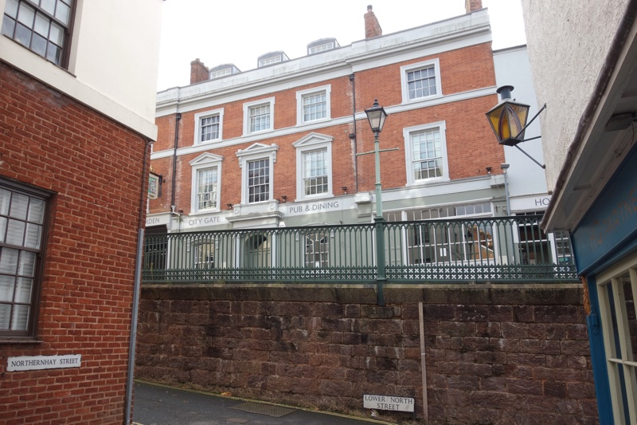 Historic City Gate Hotel and Iron Bridge from Northernhay Street
None of the members of the planning committee represent St David’s ward, where the Harlequins redevelopment will have the greatest impact. However eight of the city council’s ten executive members do sit on the committee, giving the council’s Labour leadership a built-in near two-thirds majority on planning policy and development decisions affecting the city. No other planning authority in the south west peninsula follows this practice, where the highest proportion of executive members on other planning committees is only a third, and six local authorities have no executive members on their planning committees at all.
Exeter City Council’s leader, Phil Bialyk and Labour councillor Emma Morse, who is Executive Portfolio Holder for City Development, also sit on the committee, which Emma Morse chairs, although doing so is contrary to national guidance from the Local Government Association Planning Advisory Service.
Seven of the committee’s eight Executive members voted in favour of the plans, with Laura Wright voting against alongside Rob Hannaford, Michael Mitchell and Yolonda Henson.
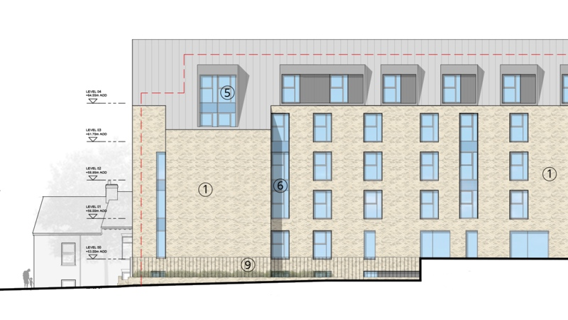 Gladstone Road co-living block comparative elevations. Image: Manson.
Since approving the Harlequins development proposals, the city council’s planning committee has approved another co-living development, on the site of the Gladstone Road South Western Ambulance Service station. Watkins Jones PLC is also behind this development, which will see a six storey block that contains 133 co-living bedspaces loom over adjacent two storey terraces on Sandford Walk and elsewhere behind.
The city council planning officer’s report followed the template set by the Harlequins decision, accepting economic impact claims at face value, requiring affordable housing provision in only 20% of the development, considering the plans as Build to Rent and sui generis at the same time, ignoring council tax revenue risks and accepting that the provision of just over three square metres of communal space per bed will compensate for studios that do not meet national minimum space standards. The Gladstone Road development was also originally presented as purpose built student accommodation.
“Co-living is an experimental concept that is gambling with people’s lives. It is an approach that seeks to maximise profits by squeezing as many people as possible into spaces that fail to meet national space standards. What this area of the city desperately needs is a mix of homes including affordable family homes.”
Jemima Moore, Exeter councillor
96% of 134 public consultation responses to this development were objections, with only two in support. Reflecting the views of many objectors, Jemima Moore, independent councillor for the Newtown and St Leonard’s ward where the development will take place, said: “Co-living is an experimental concept that is gambling with people’s lives. It is an approach that seeks to maximise profits by squeezing as many people as possible into spaces that fail to meet national space standards. What this area of the city desperately needs is a mix of homes including affordable family homes.”
Michael Mitchell added: “The design of these miniscule rooms reveals developers are just rebranding student accommodation in a way which enables developers to avoid paying developer levies. If they are genuinely intended for essential workers, they are an insult. Especially since there is no stipulation that even the smallest rooms are for single occupancy. Couples could find themselves trying to live in a room which is only eighteen feet square. These living spaces represent little more than hotel rooms, which might be fine for a few nights, but represent cramped living for the longer term and are unfit for a decent quality of life.”
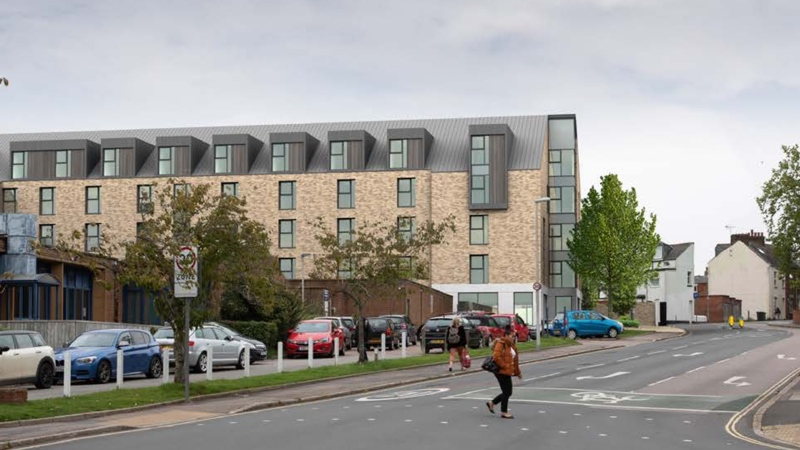 Gladstone Road co-living block rendered comparative elevations. Image: Manson.
The Harlequins redevelopment proposals seek to present the block’s owners and managers as community stakeholders despite being transnational corporations, and co-living as community-oriented despite the developer’s agent saying it provides “no strings attached” accommodation “regardless of location”.
They advocate co-living as a response to local housing need despite supplying no evidence of demand for this type of accommodation, as a remedy for rising housing costs despite it being anything but affordable and as not for student accommodation despite students being expected to live there. They present the bedspaces it provides as homes despite them neither meeting national minimum space standards nor supplying sufficient amenity or future flexibility to meet planning policy guidelines.
They conflate supply with demand, and density with size. They contradict government definitions to claim that co-living units would contribute to the council’s housing supply targets, and rely on sui generis classification to minimise affordable housing provision requirements despite Build to Rent normally constituting residential development.
Their economic impact claims don’t stand up to scrutiny, with the lion’s share of the spending generated by the development not benefiting the city, and they propose minor improvements to public realm in the immediate vicinity of the buildings as sufficient to offset significant harm to heritage assets that would be caused by the scheme.
And Exeter City Council, which has chosen not to pass its own co-living policy despite the significant weight such a policy could have in planning decisions, agrees with the developers despite near-unanimous opposition from the community and conservation charities.
As local resident Marsha Hunt said: “Exeter city centre is in real danger of becoming a large extended university campus and ignoring and excluding its permanent residents who have strong or long reaching ties to the city. After each tranche of students have left, the residents remain and it’s the residents who take care of the city, volunteer, create and bring up families, create communities and it’s those communities that are being ignored in favour of another huge global development company with no real ties to this city and purely profit at the heart of its motivation.”
Liveable Exeter North Gate redevelopment vision (left) with North Street illustration (bottom right) and City Centre Vision for a Green Capital illustration (top right). Images: Exeter City Council.
Nevertheless, the approval granted by the council’s Executive-led planning committee remains subject to a legal agreement which has yet to be completed and other conditions being met. This has allowed a coalition of local residents and campaigners, local conservation charities and community groups including Exeter Civic Society, Devon Archeological Society and Devon Buildings Group, backed by national conservation charities The Victorian Society and The Georgian Group, to appeal to the Secretary of State for Housing, Communities & Local Government to call in the decision. If the Secretary of State agrees, an inspector will be appointed to carry out an inquiry, the results of which the Secretary of State will take into account when making what would be a final, binding decision.
Since Exeter City Council approved the Harlequins redevelopment plans, the Secretary of State has stepped in to refuse permission for a co-living block in the centre of Norwich after a long campaign by local residents. If he does not overrule the current plans for the site, the rash of purpose built student accommodation that has erupted in Exeter in recent years looks set to be followed by a spate of functionally and aesthetically indistinguishable co-living developments which are likely to offer substandard short-term accommodation and do nothing to address Exeter’s affordable housing needs.
When asked recently about the status of Exeter’s City Centre Vision for a Green Capital, on which the Liveable Exeter “Transformational Housing Delivery Programme” for the North Gate area of the city centre is based, Exeter City Council said the document “is a vision and not an action plan”. The lesson in the council’s approach to the proposed Harlequins redevelopment appears to be that neither of these documents are of any relevance when it comes to what actually happens on the ground.
MHCLG has confirmed that the Secretary of State is now considering whether to call in the Harlequins decision.
Anyone can write to the Secretary of State to request that a planning decision is called in and give their reasons for doing so. The Harlequins application reference and the relevant casework manager’s contact details are available here.
A House of Commons library briefing explains the process in more detail, and a Planning Inspectorate guide offer further information. There is a an additional Planning Inspectorate guide for interested parties involved in an enquiry.
UPDATE 4 January 2021:
The Secretary of State confirmed today that the application will not be called in. The decision was made on his behalf by officials under delegated powers:
“The Government remains committed to giving more power to councils and communities to make their own decisions on planning issues, and believe that planning decisions should be made at the local level wherever possible.
“The call-in policy makes it clear that the power to call in a case will only be used very selectively.
“The Secretary of State has decided, having had regard to this policy, not to call in this application. He is satisfied that the application should be determined at a local level.”


{kind=link}
{kind=link}
{kind=link}
{kind=link}
{kind=link}
{kind=link}